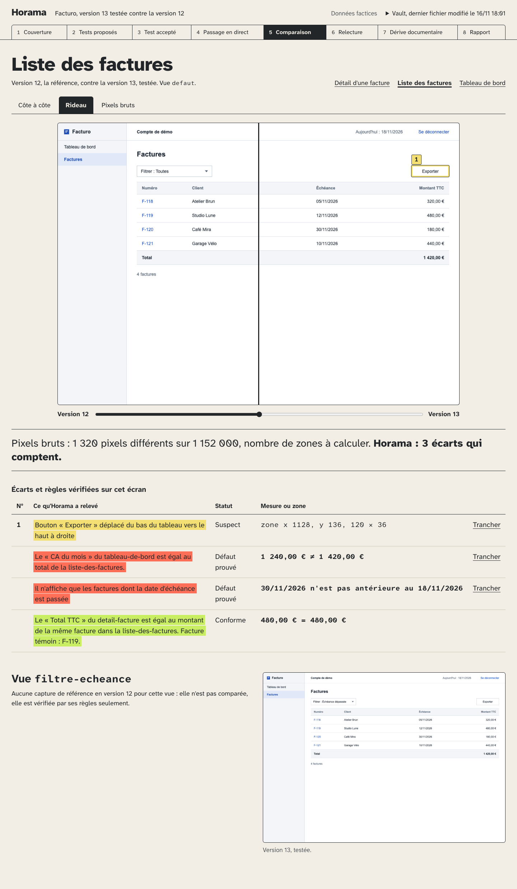
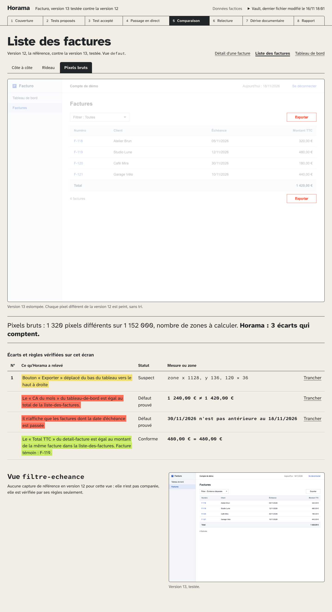
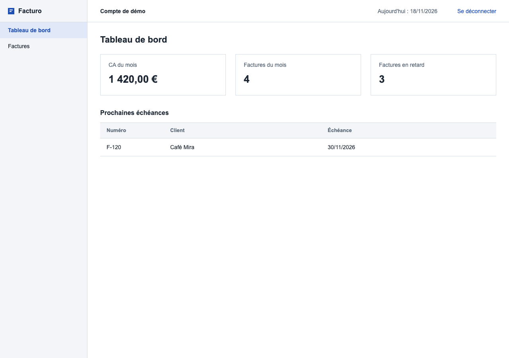
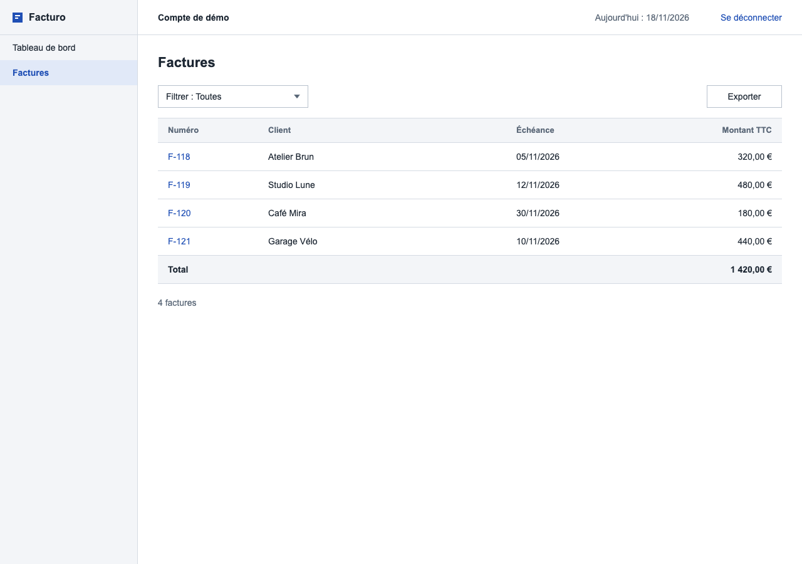
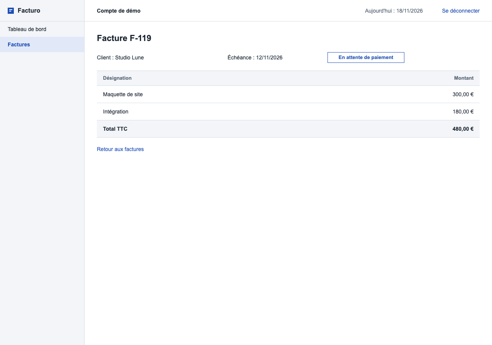

Horama, planche de direction
Lundi 16 novembre 2026, couloir Nathan, porte après N4. Captures à 1440 px de large. L'application tourne en local pour naviguer dedans : http://localhost:3000 (données factices). Le faux SaaS est en ligne : facturo-demo.vercel.app.
Ce que tu regardes
La direction
- Idée directrice. Horama est la documentation relue par quelqu'un qui est allé vérifier : la doc elle-même porte le verdict.
- Une signature. Le surlignage d'état. Une phrase vérifiable est surlignée, la couleur dit où en est la règle, la même partout : jaune à trancher, lime conforme, corail défaut prouvé, pointillé pas testée. La mesure s'écrit à côté de la phrase et sur la capture.
- Outil de travail. Navigation, onglets, tableaux et boutons standard. Verdicts en blocs pleins, valeurs en très grand.
- Typographie. Atkinson Hyperlegible Next et sa version à chasse fixe, dessinées pour ne pas confondre 1 et l, 0 et O.
- Couleurs. Les jetons provisoires de la spec, sans ajout. La couleur ne sert qu'à dire un état.
Ce qui est factice
- Les résultats, le fil du passage, le rapport et la décision : exemples des contrats, étendus. Aucun agent H n'a encore joué.
- « Accepter », « C'est voulu », « Corriger la note » changent l'état affiché, rien n'est écrit dans le vault. Recharger la page efface l'état.
- « Modèle qui a écrit ce test : à choisir (T4) » : la génération par Hugging Face est en cours de mesure (N6).
- Durées et coût : « à mesurer » ou « inconnu » tant qu'aucun passage réel n'existe.
- Le jeu factice se contredit sur un point : le test du filtre est « proposé » à l'étape 2 et déjà joué aux étapes 4 à 8.
Ce qui est vrai
- Les notes, les règles et la couverture (13 règles, 3 testées) sont lues dans le vault.
- Les captures du logiciel testé sont de vraies captures de Facturo en ligne.
- Le nombre de pixels différents est calculé dans la page, sur ces captures.
L'application, les 8 étapes
5. Rideau

5. Pixels bruts

Le faux SaaS Facturo, version 12 et version 13
Captures à 1280 × 900 prises sur l'URL publique. Deux visites de chaque page : 0 pixel différent. La v13 porte ses trois changements par défaut : CA du mois faux, filtre qui laisse passer F-120, bouton Exporter en haut à droite.
Tableau de bord, v12

Tableau de bord, v13

Liste des factures, v12

Liste des factures, v13

Détail de la facture F-119, v12

Détail de la facture F-119, v13

Liste filtrée « Échéance dépassée », v13 seulement

Le vault
vault-horama/
facturo/
produit/
_regles-communes.md
tableau-de-bord.md 1 règle calculable
liste-des-factures.md 4 règles calculables, 1 non testable
detail-facture.md 2 règles calculables
regles-entre-ecrans.md 3 règles calculables
notes-de-version/
v13.md 2 changements annoncés, en langage courant
tests/ 3 tests acceptés, écrits à la main (format C2)
liste-factures-filtre-echeance.md
ca-du-mois-egal-total.md
detail-facture-total-egal-liste.md
decisions/ vide
references/ vide
passages/ vide
Avis du juge aveugle
Un agent sans aucun contexte a regardé les 10 captures seules, puis à côté de 8 références de la banque (celles qui ont servi et d'autres, sans savoir lesquelles). Sa note n'est pas une mesure : c'est ton avis qui tranche.
Son verdict : 6,5 sur 10, aucune source unique
- Pas un clone. « Aucune référence n'est la source évidente : c'est un composite. » Parenté la plus proche : US Graphics pour la structure (onglets en boîtes à filet noir, densité), PostHog pour le fond beige et les titres gras.
- Ce qui est propre au produit. Le surlignage posé sur la phrase de documentation avec sa ligne
regle:dessous ; la preuve par l'équation en très grand ; le passage qui perd son jaune et devient souligné quand le test est accepté (« le meilleur détail de l'ensemble »). - Ce qui reste générique. La coque (bandeau, 8 onglets, crème, boutons noirs) « irait à une quinzaine de produits sur vingt ». Le surligneur redevient banal quand il sert de fond de carte.
- Écran le plus fort : le rapport (8), puis l'équation géante de la relecture (6). Les plus faibles : le passage en direct (4, aucune couleur d'état, « l'écran vivant est le plus mort »), la comparaison (5, captures minuscules, trois navigations empilées), l'accueil (1, trop de petit texte gris, règles répétées).
Corrections proposées, pas encore faites
- Captures du logiciel testé (4, 5, 6) : recadrées sur la zone utile et agrandies, pour que le texte se lise ; vignettes de la relecture sur toute la largeur.
- Plancher de lisibilité : rien sous 15 px, gris plus encré, zéro barré gardé seulement dans la chasse fixe.
- Rationner l'aplat : en relecture, le corail sur le titre et l'équation seulement ; en direct, ramener la couleur d'état sur l'étape courante et les sessions.
- Grille : compteurs alignés sur les titres, note qui suit le défilement (2, 3), rideau et carte de la dérive calés sur la page.
- Ce qui fait inachevé : « à choisir (T4) », « à calculer », « coût inconnu » sortis des titres ; règles entre écrans affichées une fois sur l'accueil ; compteurs « règles » et « tests » nommés pour ne plus sembler se contredire.
Mon avis : l'idée tient et se reconnaît, l'exécution est inégale. Les écrans 6 et 8 sont au niveau, les écrans 4 et 5 ne le sont pas encore.
Un constat à trancher pour le pitch
La vue « pixels bruts » ne montre pas « du rouge partout ». Facturo est déterministe : pour le bouton déplacé, 1 320 pixels diffèrent sur 1 152 000. L'argument du cadrage (« la comparaison de pixels voit rouge partout, Horama ne montre que 2 écarts ») ne se voit donc pas sur ce logiciel. Il se verrait sur un logiciel dont les données ou le rendu bougent d'une visite à l'autre, ou sur le SaaS du pilote.